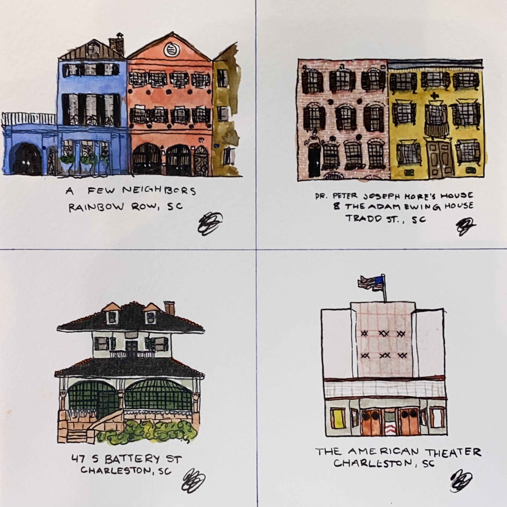
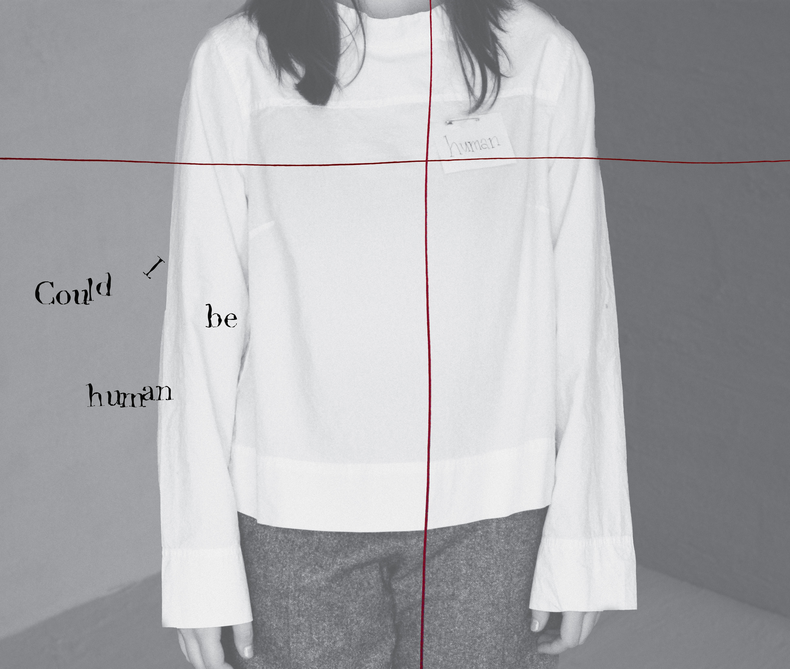
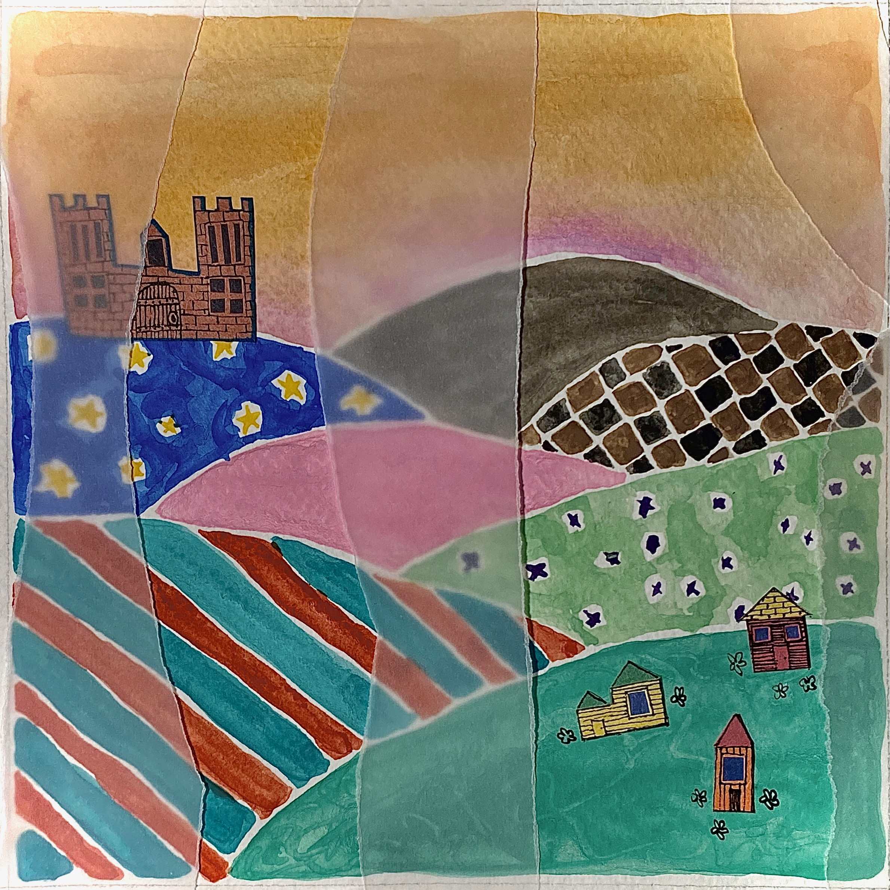
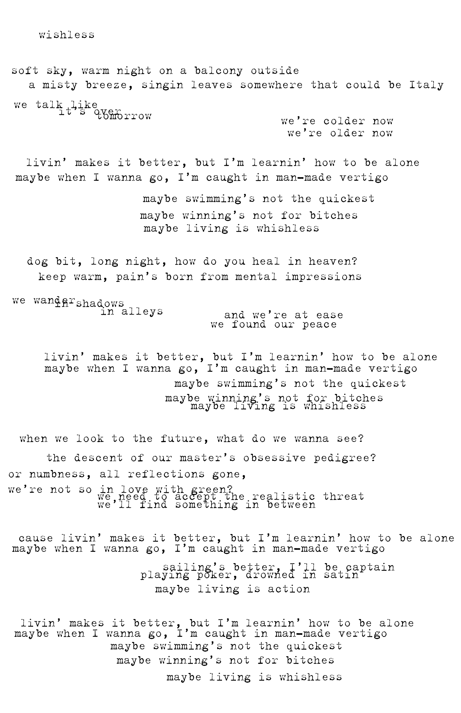

HOME
ABOUT ME
PROJECTS
CONTACT
man-made vertigo
MUSIC
I started this album in 2023 as a 200-day challenge, recording and producing it in Logic Pro X to push myself creatively, share my music, and document the journey on TikTok.
Grandma's Piano: A Miniature Replica
FINE ART
Inspired by a family piano once owned by my Grandma and passed down to my dad, I created a toy piano replica to honor its memory.
Haunted House Poster
GRAPHIC DESIGN

Charleston Sketches
FINE ART
On a trip to Charleston, SC in March 2025, I made a collection of plein-air sketches with watercolor of unique buildings I encountered.

if you called me so
GRAPHIC DESIGN/FINE ART
Tombow Mono Instructional Poster
GRAPHIC DESIGN
I designed an instructional poster with descriptors of how to use a mundane object.

when spirits sing
MUSIC
I created an original seven-track EP that explores specified themes through music. The project challenged and deepened my songwriting and remains one of my most personal works.
Craftsman Stained Glass
FINE ART

man-made vertigo Lyric Book
GRAPHIC DESIGN
To go along with my album "man-made vertigo", I created a zine-style lyric book to practice my typography and graphic design skills while visually representing each song.
"INSIDE :" by The Wrecks Album Cover Recreation"
GRAPHIC DESIGN
I made this time-consuming recreation of an album cover as part of a contest for a local record store.